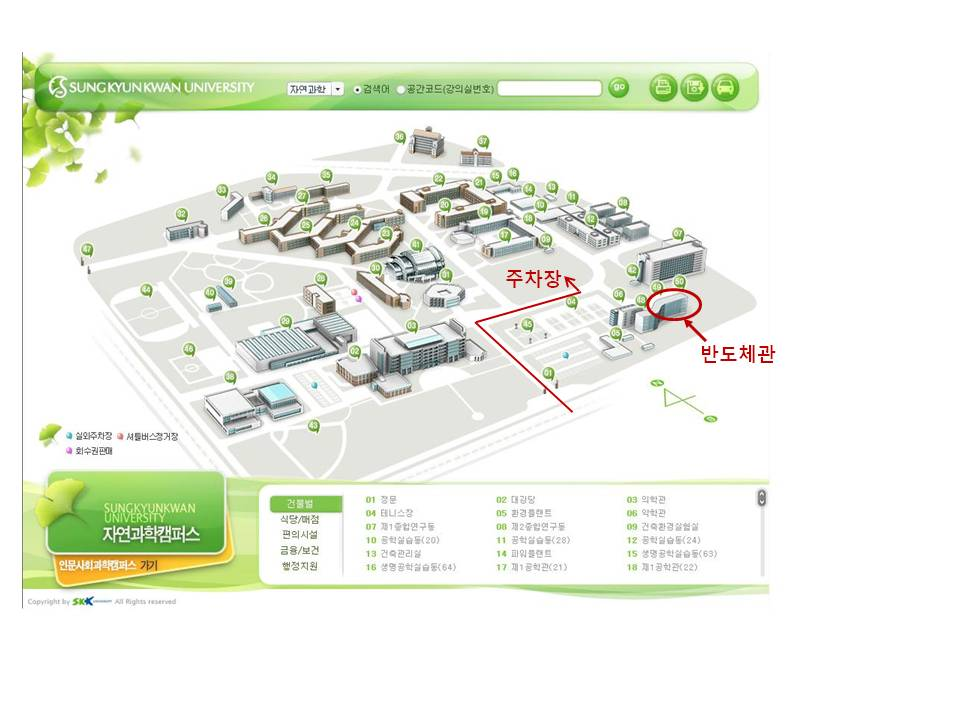

정보과학회 프로그래밍언어연구회 (SIGPL)
2008 추계학술대회
|
- 일시: 2008년 12월 13일 (토) 1:00-5:00
- 장소: 성균관대학교 자연과학캠퍼스 반도체관 330110호 |
|---|
안녕하십니까? 한국정보과학회 프로그래밍언어연구회(SIGPL)는 2008 프로그래밍언어연구회 추계학술대회를 성균관대학교 자연과학캠퍼스(수원)에서 개최합니다. 회원 여러분의 많은 참여와 관심을 부탁드립니다.
한국정보과학회 프로그래밍언어연구회 운영위원장 최진영
프로그램
- 프로그램
참고: 논문모집공고13:00 등록 13:30 총회 2008년 프로그래밍언어 연구회 총희 14:20 휴식 14:30 논문발표 I 재겨냥성 어셈블러와 링커 개발 
김호균, 정지문, 이종원, 박상현, 윤종희, 백윤흥 (서울대) IR 시뮬레이터 최영규, 안민욱, 윤종희, 김용주, 김대호, 백윤흥 (서울대) 상황 인식 기반의 개인 맞춤형 추천 시스템 윤혜진, 신현정, 창병모 (숙명여대) 15:30 휴식 15:45 논문발표 II 함수 간추림을 이용해 메모리 누수를 찾아내는 분석기
정영범, 이광근 (서울대) 컨텍스트를 구분하지 않는 분석이 오히려 느린 이유와 속도를 높이는 방법 오학주, 이광근 (서울대) 프로그램 유사도 산정을 위한 육안보정 반자동화 안효천, 이욱세, Yan Bin Tang (한양대학교) 16:45 폐회
등록안내
- 등록비 (사전 등록 마감: 2008년 12월 12일)
사전등록 (회원) 사전등록 (비회원) 현장등록 (회원 및 비회원) 학생 20,000원 25,000원 25,000원 일반 30,000원 40,000원 40,000원 - 영수증은 당일 등록과 동시에 등록 데스크에서 발급
- 현장에서 회원 가입 가능
- 등록 방법: 등록페이지를 통하여 등록
준비위원회
- 조직위원장: 한환수 교수 (성균관대,
 )
)
- 학술위원장: 신승철 교수 (한국기술교육대,
 )
)
- 문의: 총무 이재진 교수 (서울대,
 )
)
장소안내
- 성균관대학교 자연과학캠퍼스 오시는 길 (경기도 수원시 장안구 천천동 300)

- 행사 장소 (반도체관 330110호) 오시는 길
 - 시내버스 3003번: 강남역 3번출구 방면 (탑승), 성균관대역 (하차)
- 역에서 도보 20분 소요
- 지하철: 1호선 성균관대역에서 하차 (4호선 이용시 금정역에서 1호선 수원행 환승)
- 역에서 도보 20분 소요